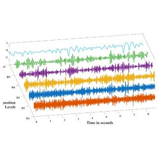

Single-Channel Wearable EEG for ADL Recognition in Healthy and Epileptic Cohorts Using MODWT-MRA and Machine Learning

Abstract
Wearable single-channel EEG is increasingly used to monitor epileptic patients outside the clinic, but the physical activity of daily living (ADL) continuously shapes the recorded signal. This activity-coupled variability is typically discarded as noise, even though it holds recoverable contextual information. Until now, EEG-based human activity recognition (HAR) has been studied almost exclusively in healthy participants under controlled lab conditions, leaving ADL recognition in clinical epileptic populations unaddressed. This study introduces a single-channel frontal EEG framework for ADL recognition, evaluated jointly on healthy, epileptic, and combined cohorts. As ambulatory EEG is multicomponent and nonstationary, a five-level maximal overlap discrete wavelet transform-multiresolution analysis (MODWT-MRA) with the Coiflet-3 wavelet decomposes each epoch into five frequency-resolved detail components, from which a compact 55-dimensional handcrafted descriptor is extracted and classified using an ensemble learner. Two recognition granularities are considered: a three-class intensity scheme (stationary, light ambulatory, intense ambulatory) and a fine-grained eight-class individual-ADL scheme, tested across multiple temporal window lengths. Using class-balanced, recording-level holdout evaluation, the framework achieves three-state activity recognition accuracies of 79.7%, 89%, and 85.2% for the Healthy, Epileptic, and Combined cohorts, respectively, with the 5-second window consistently delivering strong performance across all three groups. The method is further tested on the eight harmonized individual ADLs, offering additional insight at the activity-specific level. To our knowledge, this is the first framework to jointly perform EEG-based ADL recognition in both healthy and clinical epileptic cohorts, extending single-channel activity profiling from controlled healthy settings to activity-aware wearable monitoring in clinical populations.
In one line
Recognises activities of daily living in both healthy and epileptic cohorts from one wearable EEG channel, with MODWT-MRA features and lightweight classifiers.
Cite
@article{maksud2026singlechannel,
title = {Single-Channel Wearable EEG for ADL Recognition in Healthy and Epileptic Cohorts Using MODWT-MRA and Machine Learning},
author = {Mahdia Binte Maksud and Sadman Rahman and Md. Mehedi Hasan Bhuiyan and Tahiya Iffat Majumder and Kazi Newaj Faisal},
journal = {Biomedical Signal Processing and Control},
year = {2026},
url = {https://www.sciencedirect.com/science/article/pii/S1746809426021580}
}
Related papers
- MODWT-MRA-Based Activity-Aware Epilepsy Discrimination Using Single-Channel Wearable EEG During Activities of Daily LivingResults in Engineering · 2026
- HatSeqNet: A Sequence-Based Deep Learning Model for Cross-Subject Driver Drowsiness Detection Using Single-Channel EEG SignalIEEE Sensors Journal · 2026
- Exploring Gamma-Band Filtered Features and Machine Learning for Resource-Efficient Multi-Level Cognitive Load Classification Using EEGIEEE QPAIN · 2026